Retained pre-fix implementation versus repaired implementation. Same language, viewport, reduced-motion preference and synthetic state. Open any image at full size. Original prototype remains unchanged.
Verification and limitations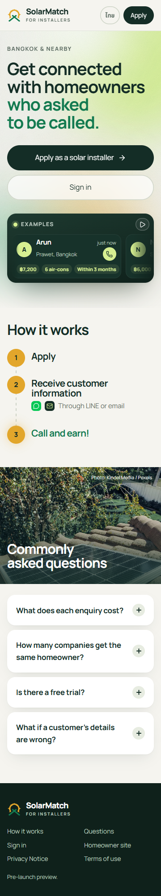
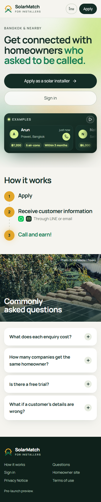
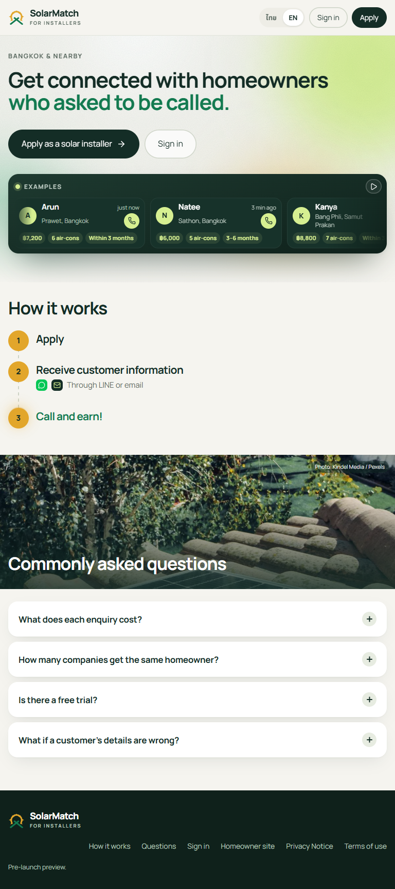
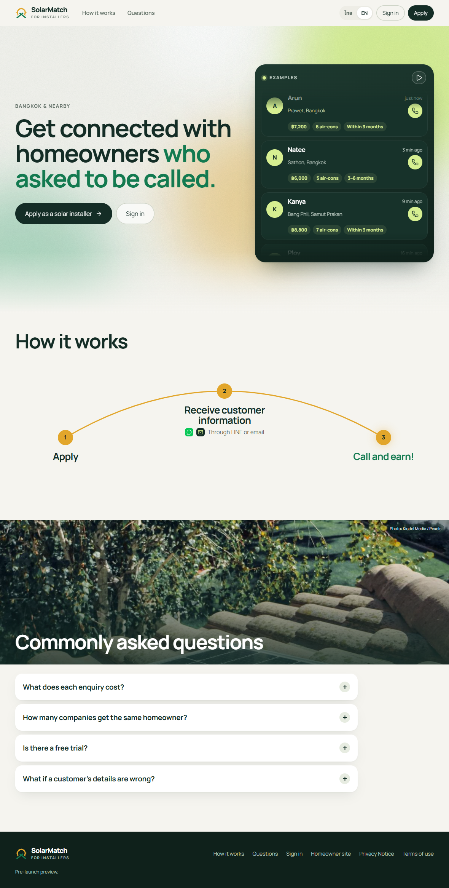
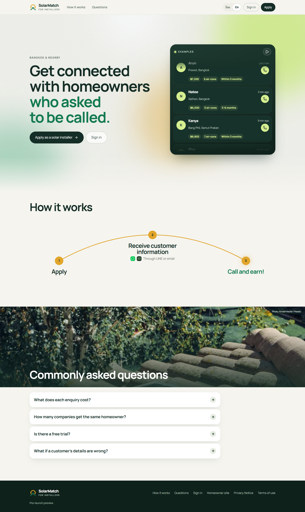
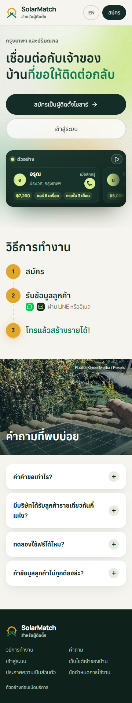
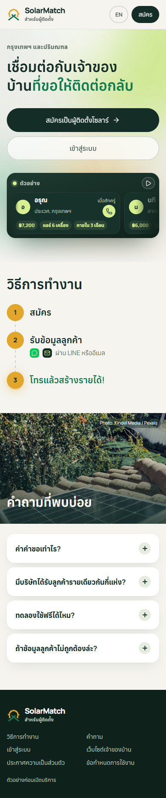
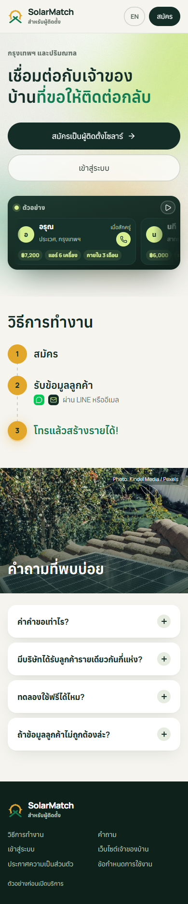
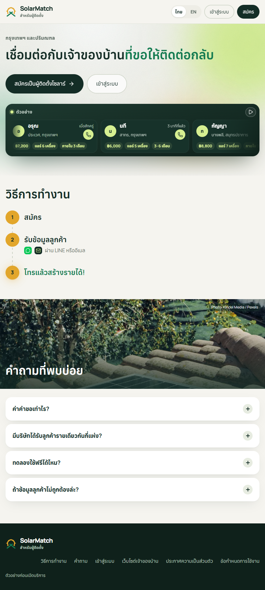
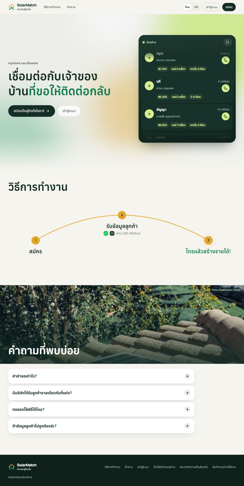
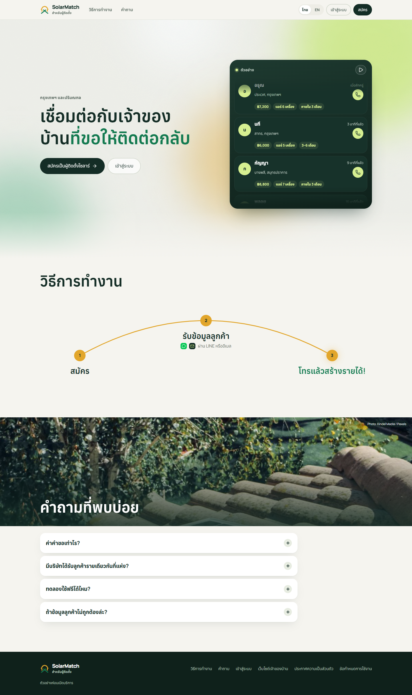
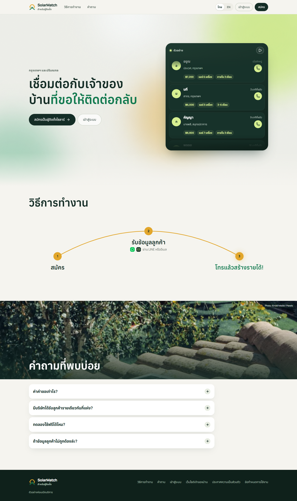